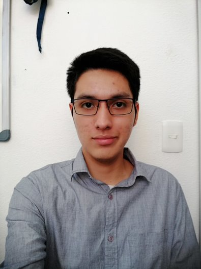

Información personal
¿Quién soy?

Mi nombre es Elliot Durán Macedo, tengo 20 años y actualmente estudio el séptimo semestre de Ingeniería
en Computación en la Facultad de Ingeniería de la Universidad Nacional Autónoma de México (UNAM).
Tengo un gran gusto por la música y suelo escuchar diversos géneros, entre los cuales se destaca el rock, jazz
y electrónica, pero dentro de todo lo que escucho mis grupos favoritos son Franz Ferdinand, Radiohead, Muse,
King Gizzard & The Lizard Wizard y Nothing But Thieves.
También me gusta jugar videojuegos, solo o con amigos. Comencé a jugar videojuegos desde que tenía 8 años con
un emulador de la SNES y desde entonces desarrolle un gran gusto por los juegos tipo Side Scroller. Mí
primera consola de videojuegos fue la Wii con la que pasé mucho tiempo jugando Mario Bros, después conseguí un
Xbox One y fue ahí cuando comencé a jugar online con amigos a Overwatch. Actualmente juego con mis amigos
a Terraria, Fornite y Worm Ultimate Mayhem, y cuando estoy solo juego a The Binding Of Isaac.
En cuanto a libros mis géneros favoritos son el terror, suspenso, ciencia ficción y detectivesco. Dentro de mis
autores favoritos están H. P. Lovecraft -me fascinan sus historias de terror y toda su mitología de criaturas
indescriptibles-, Edgar Allan Poe -historias como en El corazón delator o La caída de la casa Usher me envuelven en
su misterio-, Arthur Conan Doyle -tengo toda la colección de libros de Sherlock Holmes y algunas de sus
historias de terror como Espanto en las alturas-, y Julio Verne -me causa mucha curiosidad la manera en que se
veían los posibles avances tecnológicos que traería el futuro de una manera fantástica y muy imaginativa-.